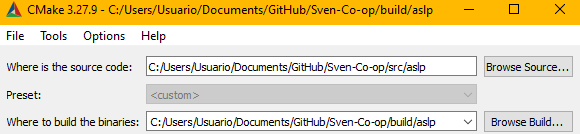
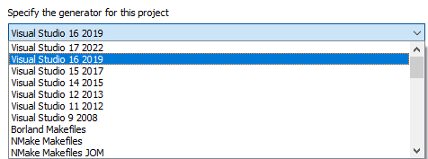
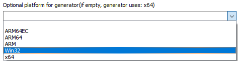
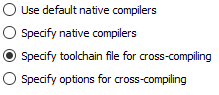
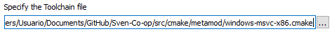
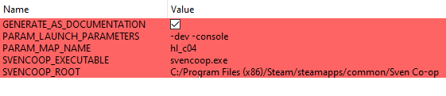
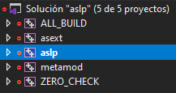

If you want to contribute to the metamod plugin aslp you'll need additional dependancies
Enter the repository directory and install the dependancies
git submodule update --init --remote external/fmt
git submodule update --init --remote external/json
git submodule update --init --remote external/metamod
Generate the project solution from CMakeLists.
You can either configure yourself by command line or using CMakeGui 3.27.9 or greater
Set the path to where the project is located and where to build the binaries.
Due to how aslp include files, it is not recommended to build the binaries in the same folder or sub-folders.

Press the "Configure" button and select your project generator

Select your build platform

Specify toolchain file for cross-compiling

Set the path to either windows-msvc-x86 or linux-gcc-i386

You can now set the path to your "Sven Co-op" installation and modify some launch parameters for when debuging

Press the "Generate" button and wait until is done, you can press then the "Open Project" to launch your IDE

Select the "aslp" project. right click and mark as "Startup project" so when you press F5 to debug it runs the game.
You may now be able to compile aslp and asext but to actually compile metamod you gonna need to go to the folder "external/metamod/scripts/" and run some dependancy scripts.
For instance you need the "build-capstone" Ideally both release and debug if you plan on building for both.
When debuging you do not need to modify liblist.gam, Visual Studio will run the game with the -dll argument
You don't need to create a plugins.ini file. if it doesn't exists the CMake process will generate one. unless you already have one, in that case you need to modify the file.